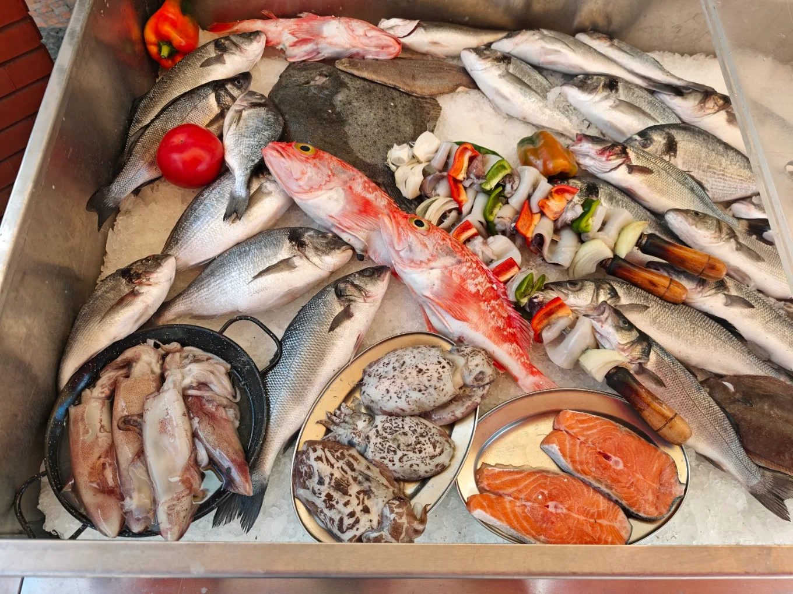
Peixe fresco,
direto à brasa.
Uma casa de peixe no coração de Portimão. Escolhemos o peixe todos os dias e grelhamos na hora, do jeito simples que sabe melhor.
O peixe do dia
Antes de ir para a brasa, passa pelas nossas mãos.
Compramos o peixe fresco e escolhemos, peça a peça, o que vai para a grelha. Sem congelados a fingir de frescos. O que vê no balcão é o que come à mesa.
O que sai da lota nesse dia entra na ementa. A lista ao lado muda consoante a época.
Costuma haver
- Dourada grelhada inteira
- Robalo grelhado inteiro
- Salmão em posta
- Choco grelhado
- Sardinha na brasa
- Polvo à grelha
Da grelha
Carvão, sal grosso e pouco mais.
É assim que gostamos do peixe. A grelha fica acesa o dia todo e os pratos saem para a mesa mal saem do lume.
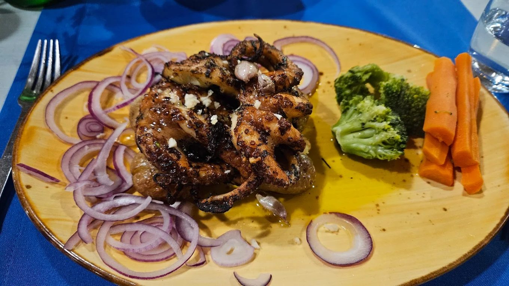
Polvo à grelha
Tenrinho por dentro, tostado por fora, com legumes salteados.
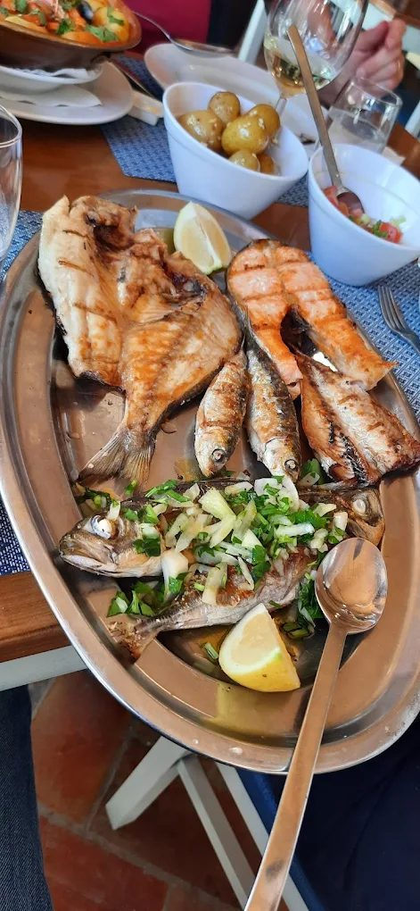
Grelhados mistos
Dourada, posta de salmão e sardinhas, tudo na mesma travessa.
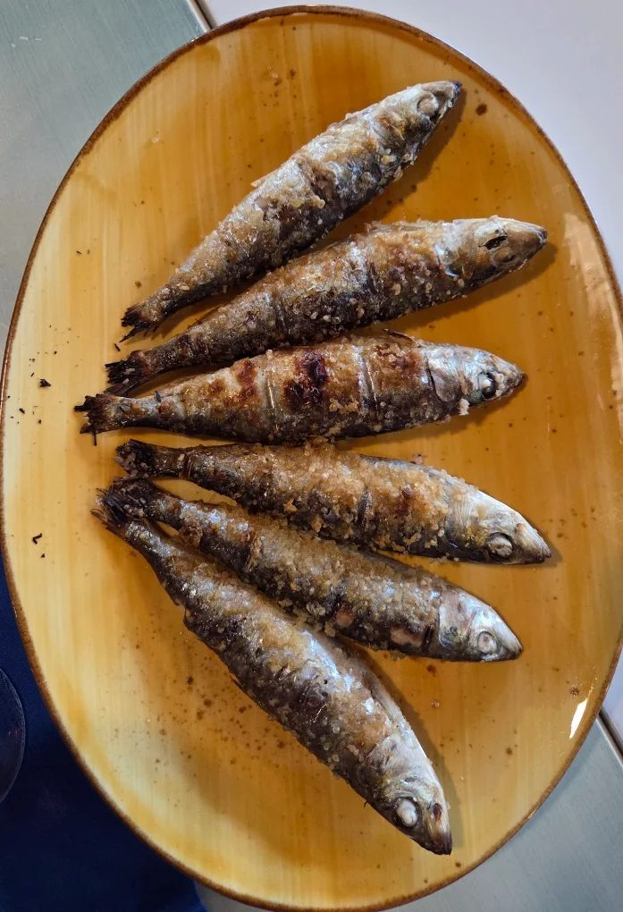
Sardinha assada
A clássica, só com sal grosso. Peça a dobrar, ninguém se arrepende.
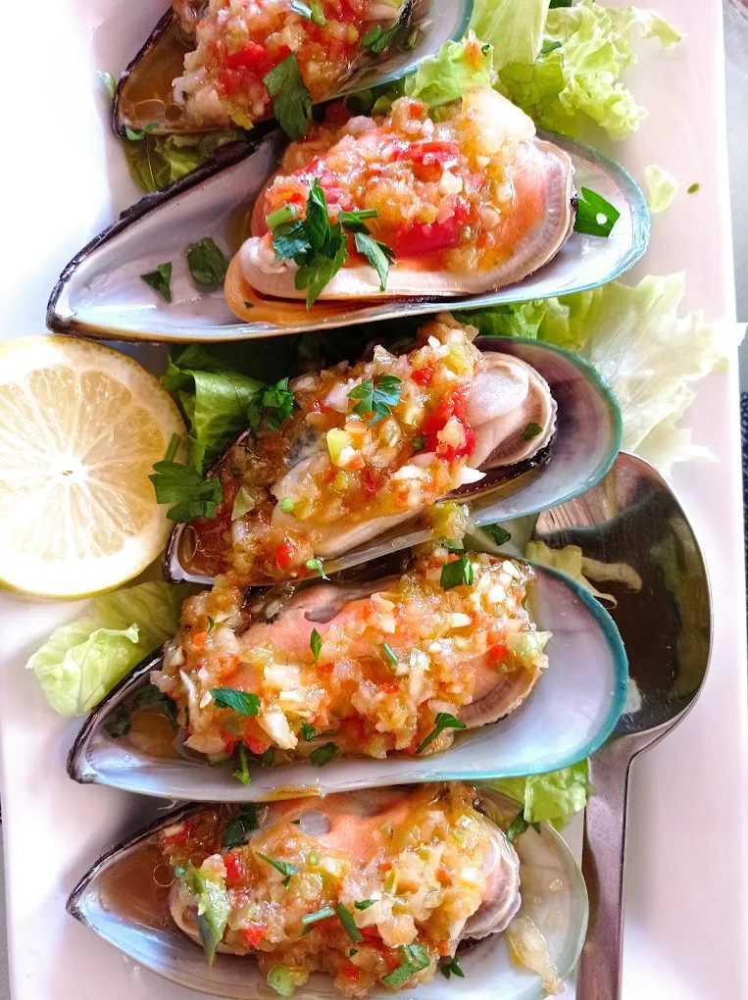
Mexilhões picantes
Com alho, malagueta e coentros, para começar bem a refeição.
Também da cozinha
Nem só de grelha vive a casa.
Marisco, massas e pratos de tacho para quem procura outra coisa além do peixe na brasa.
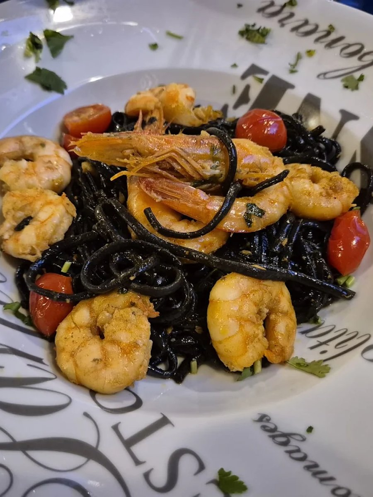
Esparguete negro com camarão
Tinta de choco, camarão salteado e tomate cereja.
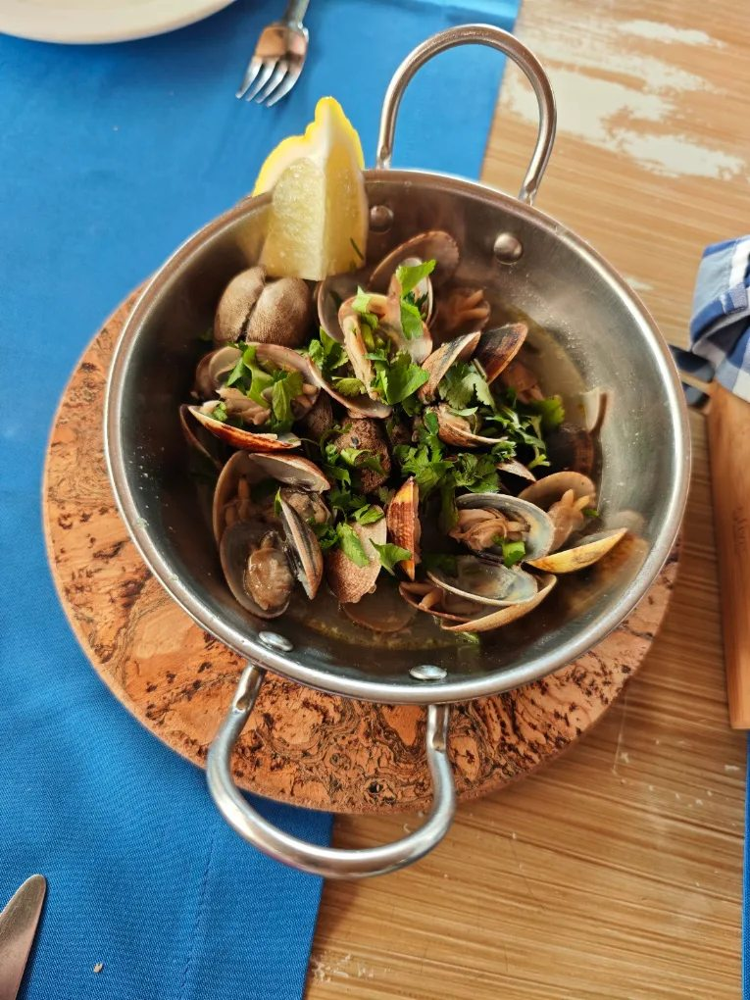
Amêijoas à Bulhão Pato
Alho, coentros e um fio de azeite, à moda antiga.
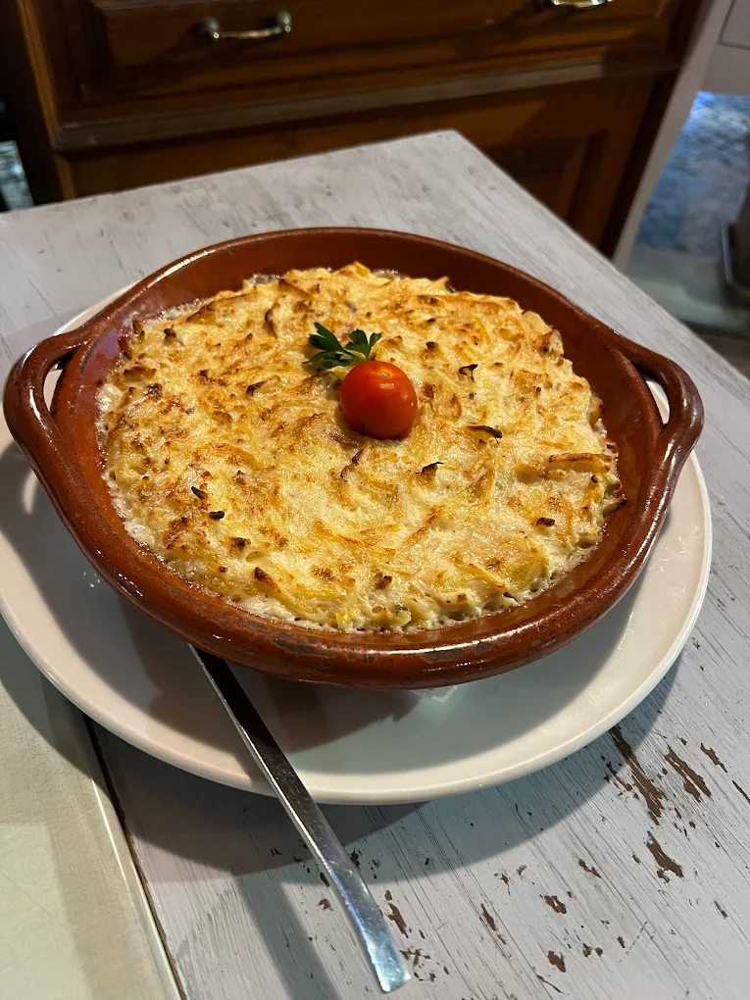
Gratinado da casa
Dourado no forno, servido bem quente na caçoila de barro.
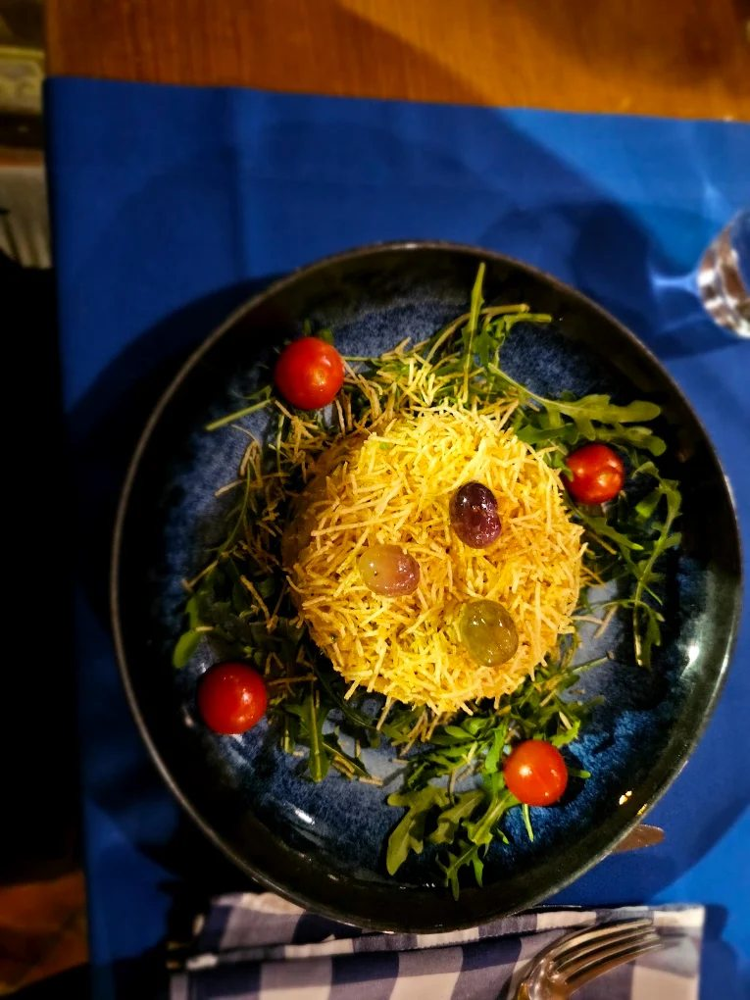
Especialidade da casa
Uma sugestão diferente, para quem gosta de sair do óbvio.
O espaço
Mesa posta, brisa do rio ao lado.
Esplanada coberta e sala com ar de casa de pescadores. Perto da marina, a dois passos do centro de Portimão.
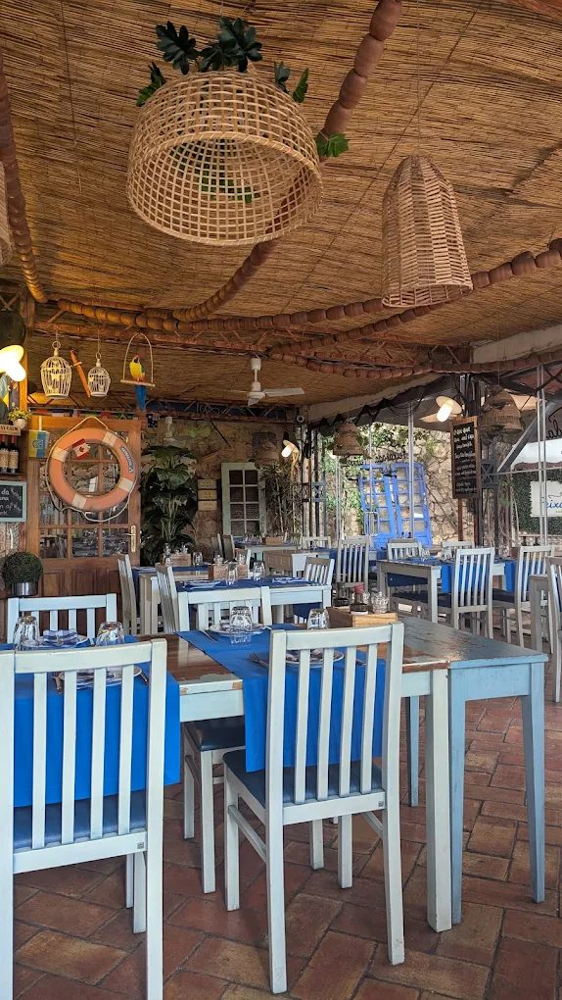
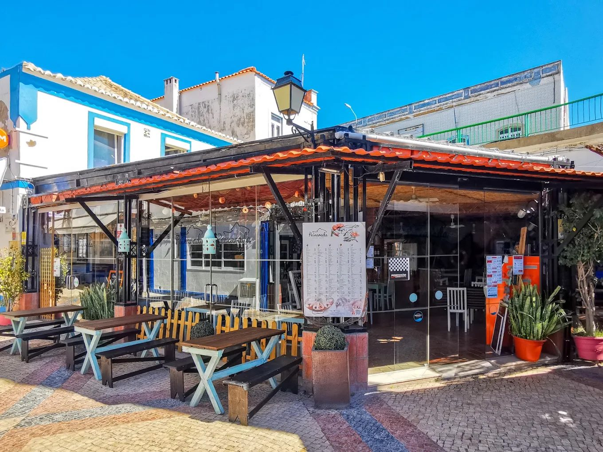
Esplanada coberta
Teto de canas, luz do Algarve e mesas viradas para a rua. Aberto o ano inteiro, com ou sem sol.
No Largo da Barca
Mesmo ao lado da marina de Portimão, fácil de encontrar e com bom estacionamento por perto.
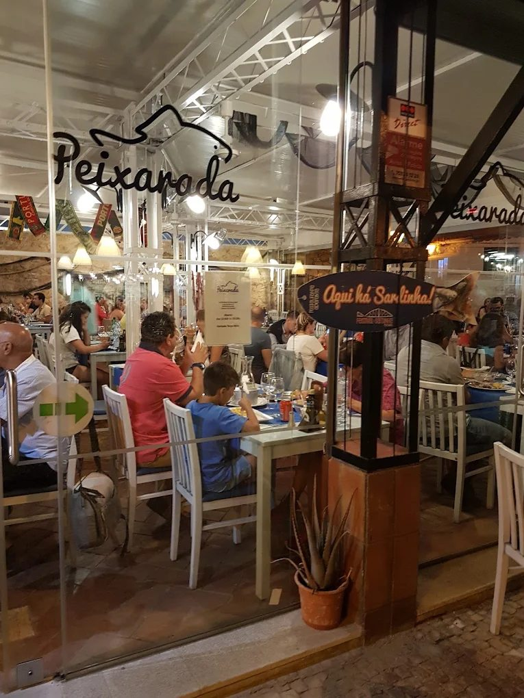
Ao jantar a casa enche depressa. Se for em grupo ou num dia de verão, vale a pena reservar.
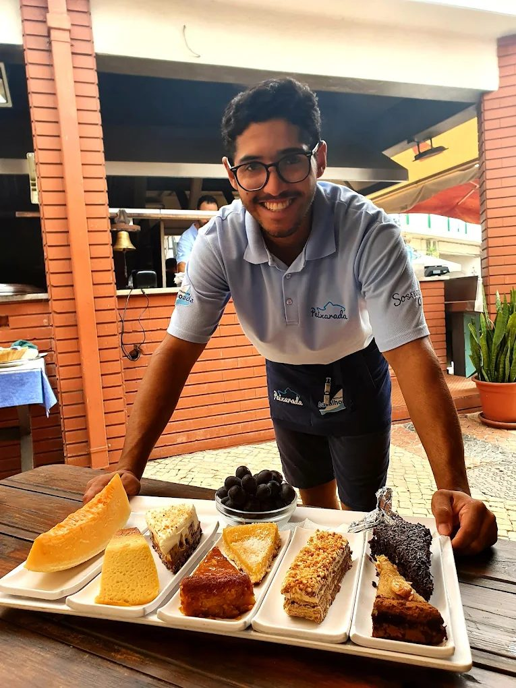
Para terminar
Uma tábua de doces, à moda antiga.
Queijo fresco, bolo de mel, tarte de amêndoa e mais uns quantos, para escolher em vez de decidir só um. Servidos à mesa, como manda a casa.
Reservas
Guardamos-lhe mesa junto à água.
Ligue ou escreva-nos. Para grupos maiores, avise com alguma antecedência e tratamos de tudo.
8500-527 Portimão
Ver no mapa
12h às 22h